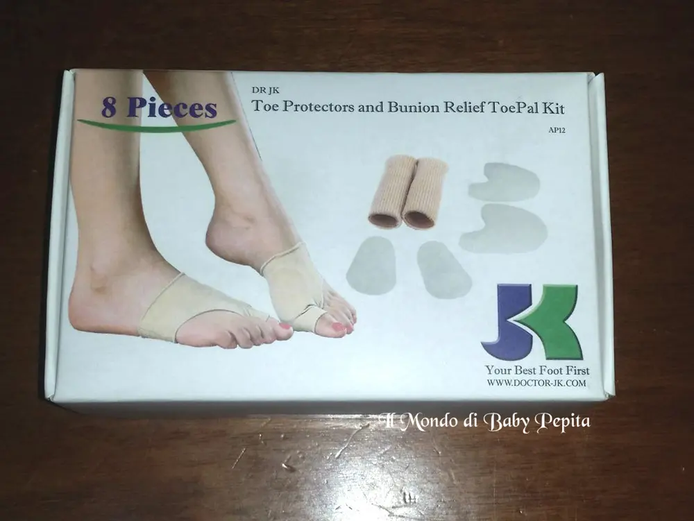
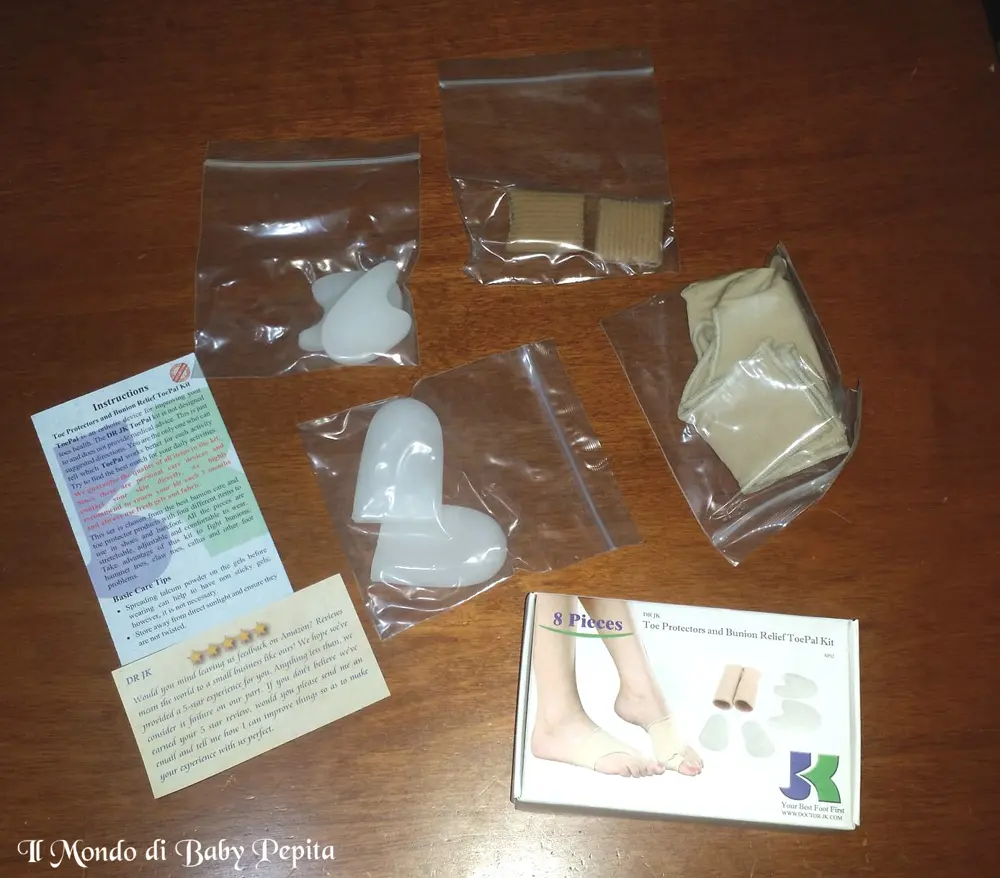
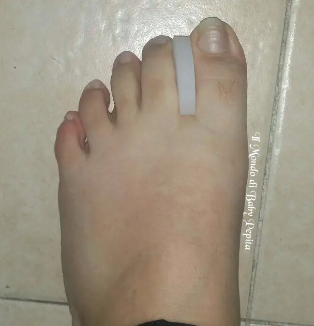
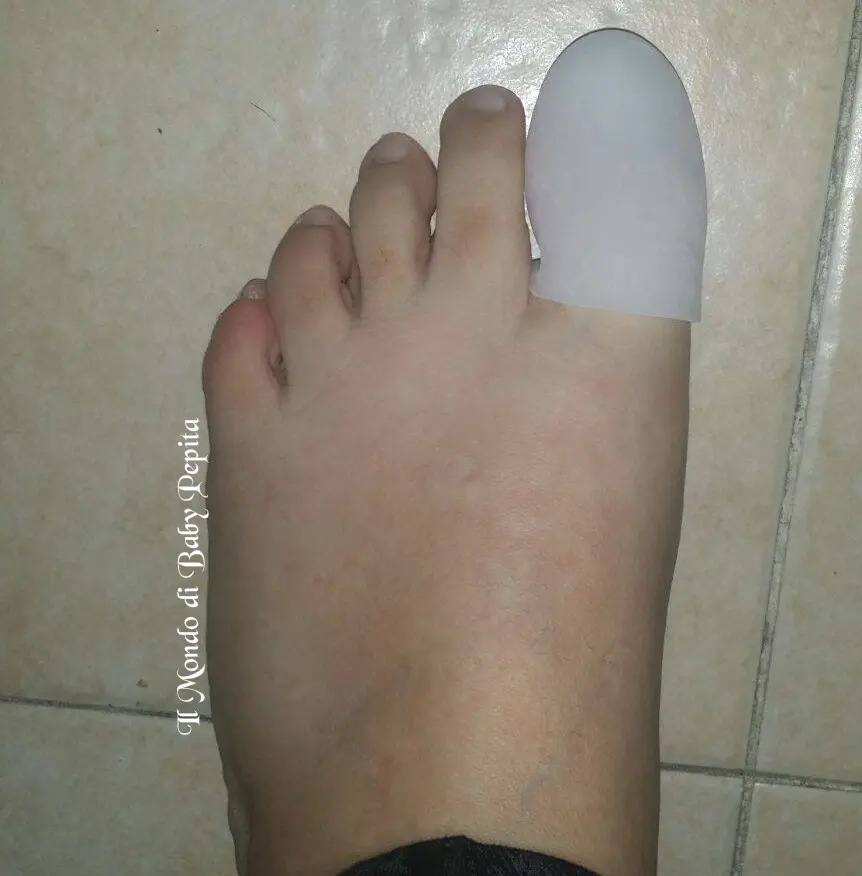
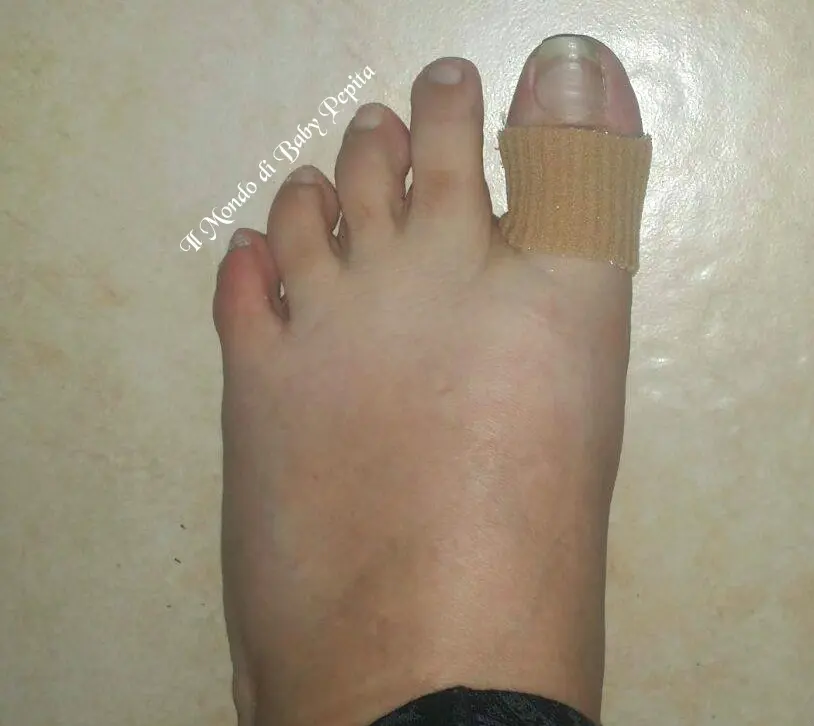
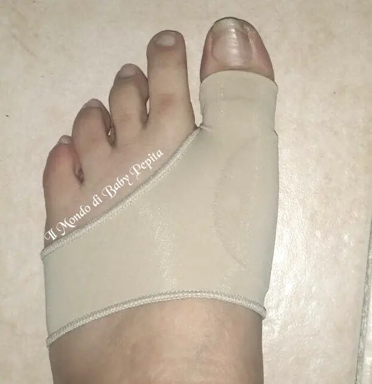
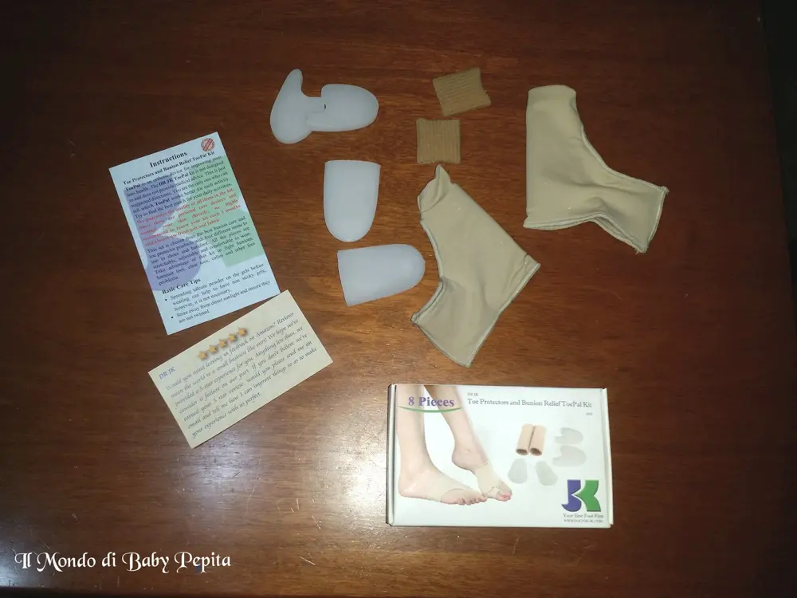

DR JK - correttore alluce valgo
Poiché sul mio blog abbiamo imparato ad affrontare qualsiasi tipo di argomento anche attraverso le tante collaborazioni ricevute, quindi sappiamo bene che chi entra può leggere di qualunque sia articolo e prodotto; diciamo dunque, che partendo da questa convinzione e premessa, vi propongo via via articoli che siano per il corpo, per la casa, per la macchina, per bambini, per donne, per uomini, per sportivi, per vanitosi e per qualsiasi categoria abbiamo interesse.Mi piace che sul mio blog non ci sia un'etichetta di una blogger che parli solo di un determinato ramo, ma bensì che si informi ed informa di tutto ciò che tocca con mano e che possa essere utile.

 Detto ciò, oggi voglio mostrarvi un articolo che trattasi di postura e quindi di salute, vale a dire di una GUAINA CON CUSCINETTI PER CHI HA L'ALLUCE VALGO.
Detto ciò, oggi voglio mostrarvi un articolo che trattasi di postura e quindi di salute, vale a dire di una GUAINA CON CUSCINETTI PER CHI HA L'ALLUCE VALGO.
All'interno del pacchettino che ci arriverà troveremo:- 2 copri alluce
- 2 guanti in gel per entrambi piedi
- 2 separatori alluce
- 2 cuscinetti

Si usano in diversi modi e servono per alleviare il dolore per chi soffre dell'alluce valgo o anche per chi ha calli.Ma non solo, infatti questi guanti vengono usati anche come separatori delle dita qualora abbiate un problema di accavallamento di dita o in mille casi per separare ferite per esempio.


Adattabile ad ogni tipo di scarpa e piede poiché è di una misura standard.Sono costituiti da tessuti leggeri e flessibili, di un materiale simile ad un gel/silicone che permette di aderire bene alla pelle evitando il fastidio nelle calzature.

La mia impressione su questo prodotto non può che essere positiva, ha diverse funzioni e sono pratiche da indossare senza molta fatica.Possono essere benissimo usate ed indicate anche ad uso medico, considerando che un prodotto simile in farmacia o in ortopedia lo andremmo a pagare il doppio del prezzo sicuramente.

Prezzo: 15,99 €
 Per acquistare questo prodotto:https://www.amazon.it/DR-Cuscinetto-Protettore-Correttore-Distanziatori/dp/B01CHDS52CPer quanto riguarda me seguitemi sui miei social:FACEBOOKINSTAGRAMTWITTERYOUTUBE
Per acquistare questo prodotto:https://www.amazon.it/DR-Cuscinetto-Protettore-Correttore-Distanziatori/dp/B01CHDS52CPer quanto riguarda me seguitemi sui miei social:FACEBOOKINSTAGRAMTWITTERYOUTUBE